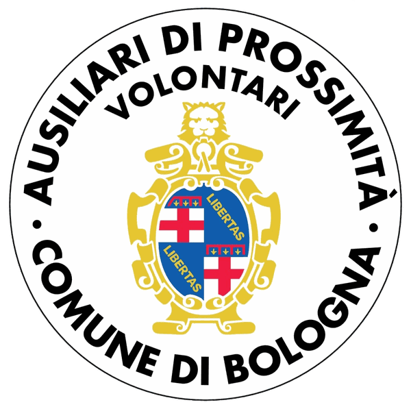
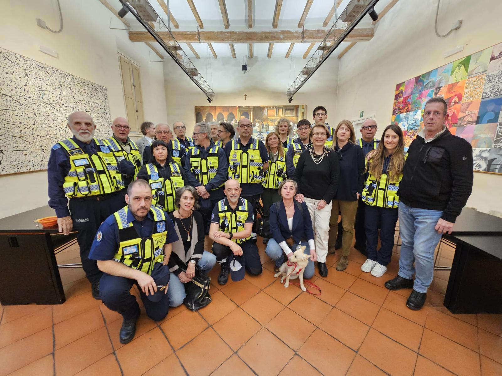
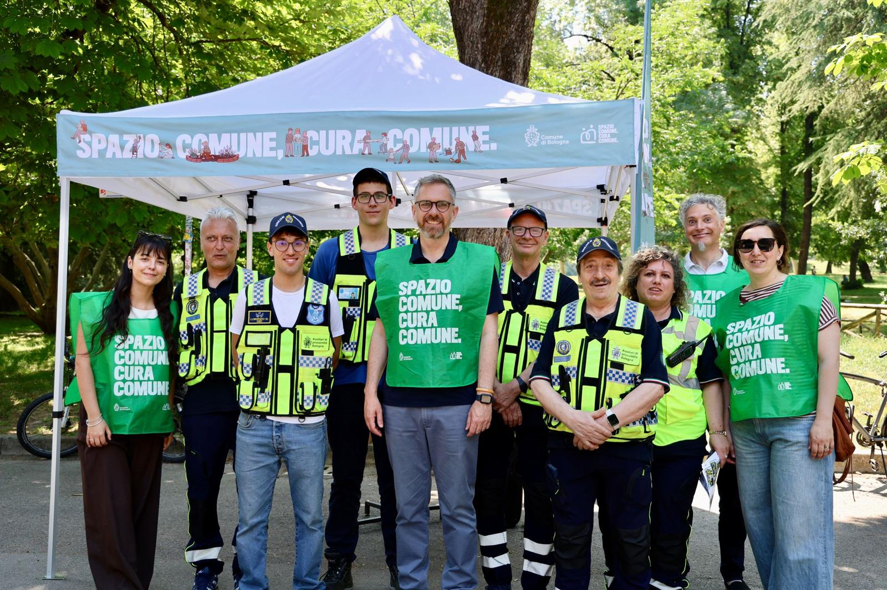
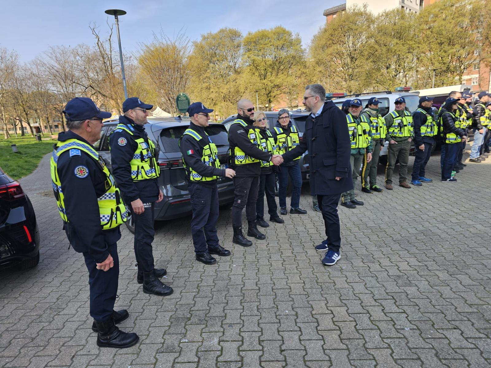

Presenti sul territorio, vicini alle persone, al servizio della comunità

Gli Ausiliari di Prossimità del Comune di Bologna sono una rete di associazioni di volontariato che collaborano per garantire presenza, supporto e sicurezza sul territorio, al servizio della comunità. Operano nei quartieri in coordinamento con la Polizia Locale e l'Amministrazione comunale.
Il Progetto degli Ausiliari di Prossimità è un modello di presenza attiva, volontaria e qualificata sul territorio, promosso dal Comune di Bologna attraverso lo strumento dei Patti di Collaborazione con gli Enti del Terzo Settore.


Un modello vincente per tutta la comunità:

Diventare volontario significa mettersi al servizio della comunità, contribuire alla vivibilità dei quartieri e costruire relazioni di fiducia con i cittadini. Gli Ausiliari di Prossimità operano insieme per promuovere presenza, ascolto e supporto sul territorio, offrendo un aiuto concreto alla città e un’esperienza umana di grande valore.
Risposte alle domande più comuni sui nostri servizi